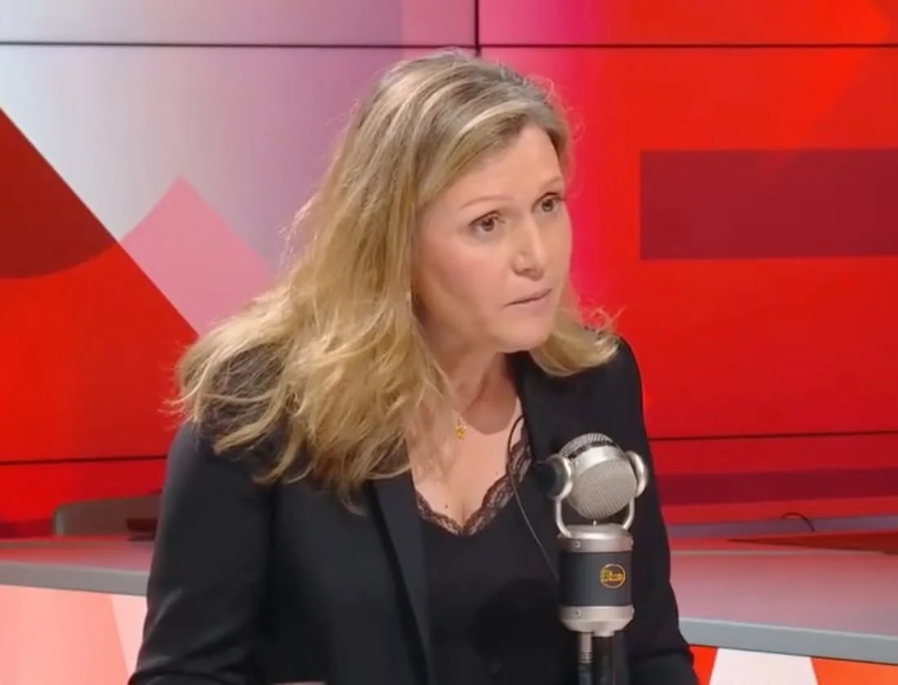

Publication relayée par le PCF 79
Retraites. Les députés communistes réagissent au retrait de l’article d’abrogation
Date de mise à jour indiquée par Facebook · 7 juin 2023
Texte de la publication · Les députés communistes
[Communiqué] La Présidente de l’Assemblée signe l’arrêt de mort des initiatives parlementaires
Les députés n’examineront pas l’article d’abrogation de la retraite à 64 ans qui aurait dû être présenté demain dans l’hémicycle. La Présidente Yaël Braun-Pivet vient de le décider.
Elle signe aujourd’hui l’arrêt de mort des initiatives parlementaires. Les conséquences seront incommensurables pour notre démocratie.
En s’asseyant sur la tradition parlementaire qui veut que toutes les propositions de loi sont examinées pour préserver le peu de pouvoir législatif qui reste aux députés, elle entraîne avec elle toute l’Assemblée Nationale dans son allégeance au pouvoir exécutif. Quel mauvais présage pour le futur de notre République…

Sources
Les députés communistes · publication relayée par le PCF 79 · bibliothèque Facebook · AR-0002-FB-01634
À lire aussi · À Parthenay, solidarité avec les militants convoqués à la gendarmerie · Le lien d’origine